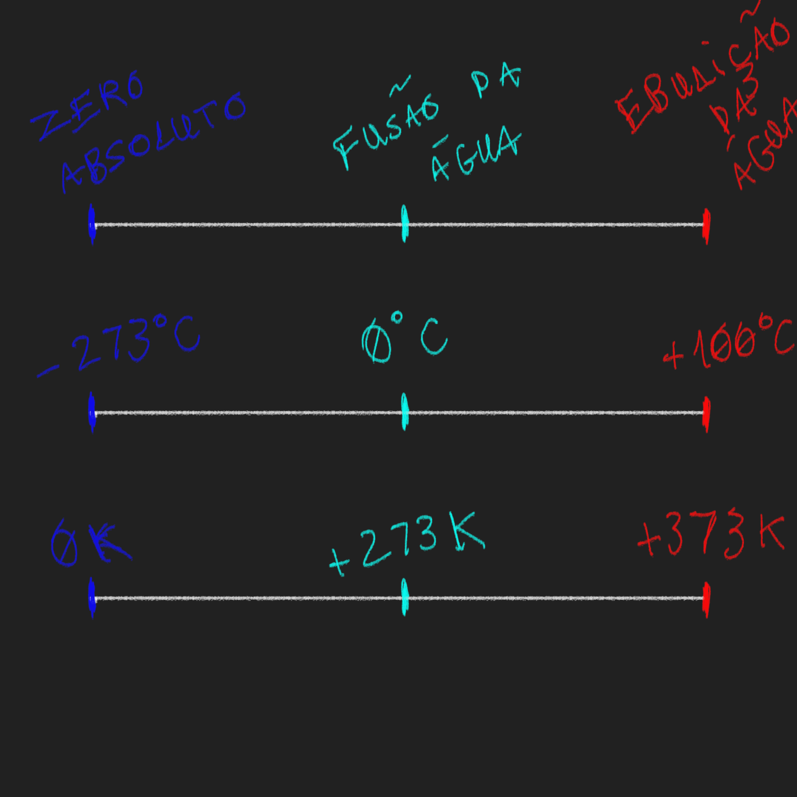

Cada átomo que compõe uma porção de matéria apresenta alguma quantidade de energia cinética, ou, em outras palavras, algum grau de liberdade de vibração e colisão com outros átomos dessa mesma porção de matéria. A média dessa energia, considerando todos os átomos da porção de matéria, é denominada temperatura.
Temperatura em números
Como representar a temperatura de um corpo com um número?
Precisamos, primeiro, de um referencial, um corpo cuja temperatura seja usada como base de comparação.
Existem diferentes escalas de temperatura e cada uma usa referências arbitrárias. Algumas escalas são °C (grau celsius), °F (grau Farenheit) e K (Kelvin).
Na escala Celsius, a referência inicial é a temperatura da água em fusão. A outra referência e a temperatura de ebulição dessa mesma substância. Do primeiro para o segundo nível de energia média, atribui-se um aumento de 100°C. Em outras palavras, 1°C equivale a um centésimo da variação de temperatura entre a água em fusão e em ebulição.
A unidade K, da escala Kelvin, equivale à mesma variação que a unidae °C. Mas, apesar das unidades representarem a mesma variação, a base de comparação da escala Kelvin não é a água em fusão, mas a menor temperatura encontrada na natureza (também chamada de zero absoluto).
Agora, é interessante notar o fato estranho de que 1K e 1°C equivalem à mesma variação de temperatura, mas não à mesma temperatura.
Isso ocorre porque, ainda que as unidades correspondam à mesma alteração de temperatura, essa variação é aplicada à valores iniciais distintos.
Nesse caso, conforme a aferição de Thompson, a temperatura base da escala Kelvin (ou o 0K) equivale à -273°C, ou seja, está 273°C abaixo da base da escala Celsius.
As bases são diferentes, mas unidades são compatíveis, e sabemos os dois valores que representam a mesma temperatura (no caso, a do zero absoluto). Com isso, podemos somar ou subtrair algum valor a ambas as temperaturas, e os novos valores continuarão representando a mesma temperatura. Por exemplo
Mesmo que determinada temperatura não seja expressa pelos mesmos valores em K e °C, uma determinada variação em K é a mesma em °C. No exemplo acima, entre o zero absoluto e a temperatura de fusão da água, há uma variação de 273K e 273°C, a mesma variação.